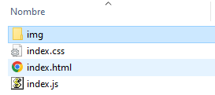

Marwin Alejandro Perdomo quintero
German Ricardo Martinez Lopez
Tarea 2
1. Cree una carpeta que tenga la siguiente estructura
/su-proyecto
/index.html
/index.css
/index.js

2. Inicie editando el index.html:
Ponga el marcado básico de una página web.
Modifique la presentación de su página web usando solamente el archivo de CSS, cambie los estilos de letra, los colores de fondo, agregue imágenes con margen.
Elija una paleta de colores usando la guía de Material Design.
Defina una estructura para la página web, por ejemplo, nav bar y footer.
3. Edite el archivo Index.js:
Agregue el código fuente en JS que requiera para añadir funcionalidades a la página web.
Defina como mínimo 2 funcionalidades para su página web, por ejemplo, un botón que cambie algún aspecto de la página.
Agregue los cambios necesarios al archivo HTML y CSS para que por medio de las funcionalidades definidas en JS se hagan los cambios en la página web.
4. Subir el proyecto a GitHub y adjuntar la URL del proyecto, el proyecto debe ser público. Se debe poder evidenciar los commit de cada uno de los integrantes del grupo durante todo el desarrollo del trabajo, estos commits se verificaran para asignar la nota.
Enviar la carpeta .rar o .zip, la cual debe contener los 3 archivos con la solución.
Nombrar la carpeta con los nombres de los estudiantes, primer nombre y primer apellido: yuryMontoyaSebastianYepes.rar.
Como comentario en HTML, deberán estar especificados cada uno de los nombres de los integrantes del grupo.
En el proyecto de GitHub se deben evidenciar los commit de todos los integrantes del equipo.